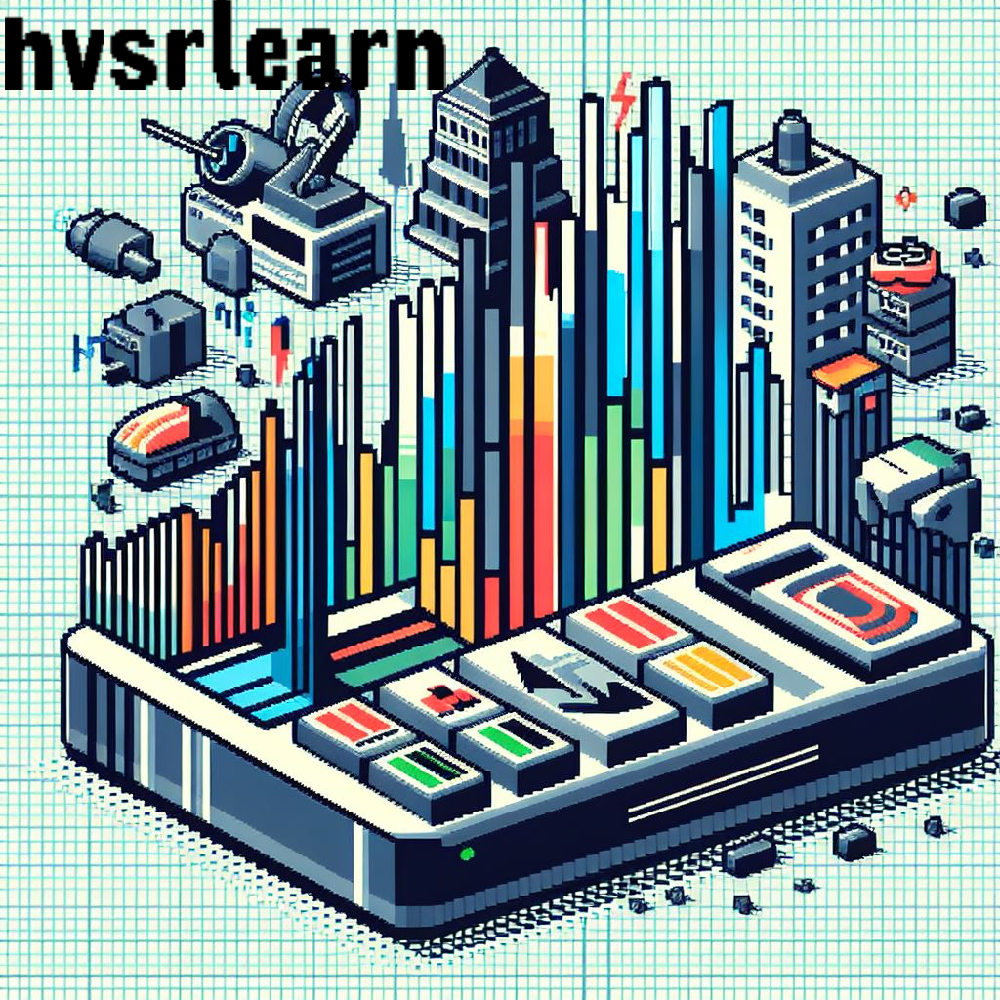
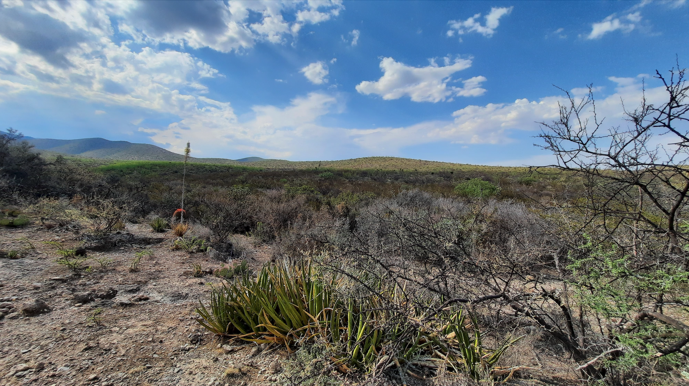
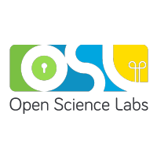

Bienvenido
¡Bienvenido a mi rincón digital! Explora mi identidad en la sección "Sobre mí", descubre los entresijos de los proyectos que han dejado huella en mi trayectoria en la sección "Proyectos", y sumérgete en las reflexiones de mi recorrido profesional a través de mi "Blog". En la barra de menú, encontrarás enlaces directos a mis perfiles de LinkedIn y Github. Siguiéndome en LinkedIn, podrás mantenerte al tanto de mis proyectos futuros, mientras que en Github, tendrás la oportunidad de contribuir a los proyectos que estoy desarrollando. Además, hallarás un enlace a mi cuenta de PayPal, una pieza clave ya que actualmente soy autónomo y cada apoyo cuenta. ¡Acompáñame en este emocionante viaje!
Sobre mí
Soy José María García Márquez, ingeniero geofísico recién egresado de la Facultad de Ingeniería de la UNAM. Poseo habilidades en procesamiento de datos geofísicos y programación (Python, R, MATLAB). Mi enfoque se dirige hacia la aplicación de Redes Neuronales y herramientas como Git, LaTeX y JupyterLab para analizar conjuntos de datos extensos. Estoy especializado en modelamiento de variables espaciales, análisis de datos espaciales y técnicas geofísicas, incluyendo el procesamiento de datos sísmicos y la interpretación de registros de pozo.
Proyectos
FQLEARN

This Project aims to facilitate the teaching of unit operations and thermodynamics. Designed in python, it intends to be a library that uses graphical methods and that applies modern equations solve problems related.
Leer másHVSRLEARN
"hvsrlearn" is a Python application designed for the calculation and analysis of the Horizontal-to-Vertical Spectral Ratio (HVSR) from seismic data in three components (Z, N, E). The application features a graphical user interface built using Tkinter, providing an intuitive and interactive platform for users to analyze and visualize seismic data.
Leer másFQLEARN
Descripción completa del Proyecto 1. Puedes agregar cualquier tipo de formato de texto que admita Markdown.
Título del Proyecto 2
Descripción completa del Proyecto 2. Puedes agregar cualquier tipo de formato de texto que admita Markdown.
Zacatecas: Una práctica real
Fecha: 2024-01-08
Recuerdo Zacatecas como si hubiese sido ayer. El sol nos golpeaba directamente en el rostro, marcando el comienzo de una experiencia única en mi travesía por el mundo laboral de la geofísica. Nuestra misión era aparentemente simple, pero altamente específica, y para nosotros, representaba un desafío emocionante.
Leer másOpen Science Labs y un planeta llamado Open Source
Fecha: 2024-01-08
Desde que ingresamos a cualquier carrera en dónde usamos ciencias exactas, nos enseñan usar herramientas de trabajo, y cómo funcionan, pero poca gente te enseña a como hacer tus herramientas. Durante los últimos meses, tuve el privilegio de sumergirme en el fascinante universo del código abierto como pasante en Open Science Labs. Esta oportunidad no solo me permitió adquirir valiosos conocimientos técnicos, sino que también me brindó una perspectiva única sobre la colaboración en la ciencia y la tecnología.
Leer másArtículo en redacción
Fecha: 2024-01-08
Este es un ejemplo de contenido para un post en formato Markdown. Puedes agregar cualquier tipo de formato de texto que admita Markdown, como **negrita**, *cursiva*, enlaces [a otras páginas](#), listas, imágenes, y mucho más.
Sección 1
Aquí puedes agregar información detallada sobre la primera sección de tu post.
Sección 2
Y aquí está la información para la segunda sección.